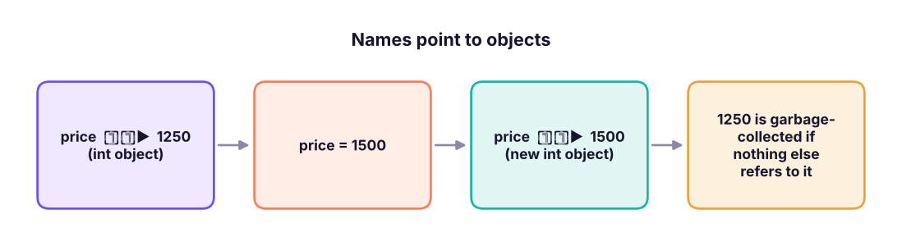

Variables, Data Types, Type Conversion, print(), f-strings & input()
Store and name values with variables, meet Python's core data types (int, float, str, bool, None, complex), convert between types, format output with print(), f-strings and .format(), and read user input with input() and sys.argv.
- Create variables and follow Python naming rules and conventions
- Identify and check types with type() and isinstance(); explain mutable vs immutable
- Convert between int, float, str and bool, and predict what int(), float(), bool() and str() do
- Format output with print() options, f-strings (including number formats) and str.format()
- Read and validate input with input(), and avoid float rounding surprises
Variables
A variable is a name that refers to a value stored in memory. You create it by assigning with =: no declaration, no type needed.
price = 1250 # an int
tax_rate = 0.18 # a float
product = "Laptop" # a str
in_stock = True # a bool
total = price * (1 + tax_rate)
print(product, "costs", total)Laptop costs 1475.0

Naming rules and conventions
| Rule | Example |
|---|---|
Letters, digits and _ only; cannot start with a digit |
sales_2025 ✓, 2025_sales ✗ |
| Case-sensitive | Total and total are different |
Cannot be a keyword (if, for, class, None, True…) |
class ✗, class_name ✓ |
Convention: snake_case for variables and functions, PascalCase for classes, UPPER_CASE for constants |
monthly_income, CustomerOrder, GST_RATE |
| Use meaningful names | avg_order_value not aov2 or x |
| Avoid shadowing built-ins | Do not name variables list, sum, max, str, id, input |
a = b = c = 0 # chained assignment
x, y, z = 1, 2.5, "three" # multiple assignment (tuple unpacking)
x, y = y, x # swap without a temp variable
print(a, b, c, x, y, z)0 0 0 2.5 1 three
Data types
Everything in Python is an object with a type. Check it with type().
| Type | Name | Example | Notes |
|---|---|---|---|
int |
Integer | 42, -7, 1_000_000 |
Unlimited size |
float |
Decimal number | 3.14, 2e-3 |
64-bit binary floating point |
str |
Text | "Pune", 'Pune' |
Immutable sequence of characters |
bool |
Boolean | True, False |
Subclass of int (True == 1) |
NoneType |
"nothing" | None |
Used for missing/absent values |
complex |
Complex number | 3 + 4j |
Rare in data work |
list, tuple, dict, set |
Collections | Lessons 8–10 |
values = [42, 3.14, "Pune", True, None, 3 + 4j, [1, 2], (1, 2), {"a": 1}, {1, 2}]
for v in values:
print(f"{str(v):10s} -> {type(v).__name__}")42 -> int
3.14 -> float
Pune -> str
True -> bool
None -> NoneType
(3+4j) -> complex
[1, 2] -> list
(1, 2) -> tuple
{'a': 1} -> dict
{1, 2} -> setprint(isinstance(42, int), isinstance(True, int), isinstance(3.0, (int, float))) # True True True
print(type(10 / 2), type(10 // 2)) # / always returns float; // with ints returns intTrue True True <class 'float'> <class 'int'>
Mutable vs immutable
- Immutable: cannot be changed after creation:
int,float,str,bool,tuple,frozenset. "Changing" creates a new object. - Mutable: can be changed in place:
list,dict,set.
s = "data"
try:
s[0] = "D" # strings are immutable
except TypeError as e:
print("Error:", e)
s2 = "D" + s[1:] # build a new string instead
print(s2, "| id changed:", id(s) != id(s2))Error: 'str' object does not support item assignment Data | id changed: True
Numbers: int and float
big = 12_345_678_901_234_567_890 * 10 # ints never overflow
print(big)
print(0.1 + 0.2) # floats are approximate!
print(0.1 + 0.2 == 0.3, abs((0.1 + 0.2) - 0.3) < 1e-9)
print(round(2.675, 2), round(0.5), round(1.5), round(2.5)) # banker's rounding: halves go to even123456789012345678900 0.30000000000000004 False True 2.67 0 2 2
Computers store decimals in binary, so 0.1 + 0.2 is 0.30000000000000004. For money use decimal.Decimal (or integers of paise); for comparisons use math.isclose(a, b) or abs(a - b) < tolerance. Python's round() rounds halves to the nearest even number (round(2.5) = 2), unlike Excel's ROUND.
from decimal import Decimal
print(Decimal("0.1") + Decimal("0.2")) # exact decimal arithmetic
import math; print(math.isclose(0.1 + 0.2, 0.3))0.3 True
Booleans and None
print(True + True, 5 > 3, 5 == 5.0, "a" < "b", not False)
print(bool(0), bool(0.0), bool(""), bool([]), bool(None)) # all False: "falsy" values
print(bool(1), bool(-3), bool("0"), bool([0])) # all True: anything else is "truthy"
print(None is None, type(None))2 True True True True False False False False False True True True True True <class 'NoneType'>
Falsy values: 0, 0.0, "", [], {}, (), set(), None, False. Everything else is truthy. None represents "no value" (like SQL NULL); test with is None, never == None.
Type conversion
Convert with the type's name: int(), float(), str(), bool(), list()…
print(int("42"), int(3.99), int(-3.99), int(True)) # int() truncates towards zero
print(float("3.5"), float(7), float("1e3"))
print(str(123), str(3.0), str([1, 2]))
print(int("1010", 2), int("ff", 16), bin(10), hex(255)) # other bases
print(round(3.7), round(3.14159, 2), int(round(3.7)))42 3 -3 1 3.5 7.0 1000.0 123 3.0 [1, 2] 10 255 0b1010 0xff 4 3.14 4
print("5" + 3) # TypeError: can only concatenate str to strTypeError: can only concatenate str (not "int") to str
print("5" + str(3), int("5") + 3, "5" * 3) # explicit conversion; repetition for strings53 8 555
int("abc") # ValueError: invalid literal for int()ValueError: invalid literal for int() with base 10: 'abc'
| Conversion | Result | Note |
|---|---|---|
int("42") |
42 | String must look like an integer |
int("3.7") |
ValueError | Convert to float first: int(float("3.7")) |
int(3.99) |
3 | Truncates (not rounds) |
float("abc") |
ValueError | |
str(None) |
'None' |
|
bool("False") |
True | Any non-empty string is True! |
list("abc") |
['a','b','c'] |
Implicit conversion happens in mixed arithmetic: int + float → float, bool + int → int.
print(1 + 2.0, True + 1, type(1 + 2.0).__name__)3.0 2 float
print(): showing output
print("Order", 1001, "shipped") # items separated by a space
print("Order", 1001, "shipped", sep=" | ") # change the separator
print("Loading", end="...") # change the line ending (no newline)
print("done")
print("Line one\nLine two\tTabbed") # escape sequences: \n newline, \t tab
print('He said "hi"', "It's fine", 'It\'s fine') # quotes inside strings
print(r"C:\new\table") # raw string: backslashes kept
print("""A multi-line
string with triple quotes""")Order 1001 shipped Order | 1001 | shipped Loading...done Line one Line two Tabbed He said "hi" It's fine It's fine C:\new\table A multi-line string with triple quotes
f-strings: the modern way to format
Put f before the quotes and {expression:format} inside:
name, qty, price, share = "Asha", 3, 1234.5678, 0.2345
print(f"{name} bought {qty} items")
print(f"Price: {price:.2f}") # 2 decimals
print(f"Price: {price:,.2f}") # thousands separator
print(f"Share: {share:.1%}") # percentage
print(f"ID: {qty:03d}") # zero-padded to 3 digits
print(f"[{name:<10}] [{name:>10}] [{name:^10}]") # left, right, centre in width 10
print(f"{price:>12,.1f}|") # right-aligned width 12
print(f"{qty * price:,.2f} {qty = }") # expressions work; {x = } prints name and value
print(f"{1234567:,} {255:#x} {255:b} {0.000123:.2e}")Asha bought 3 items
Price: 1234.57
Price: 1,234.57
Share: 23.4%
ID: 003
[Asha ] [ Asha] [ Asha ]
1,234.6|
3,703.70 qty = 3
1,234,567 0xff 11111111 1.23e-04| Format spec | Meaning |
|---|---|
.2f |
2 decimal places (fixed) |
, |
Thousands separator |
.1% |
Percentage with 1 decimal |
05d |
Integer padded with zeros to width 5 |
<10, >10, ^10 |
Left / right / centre in width 10 |
e |
Scientific notation |
x, b, o |
Hex, binary, octal |
.format() and % (older styles)
print("{} bought {} items at {:.1f}".format("Asha", 3, 12.345))
print("{1} before {0}".format("B", "A"))
print("{name} paid {amt:,.0f}".format(name="Ravi", amt=1234567))
print("%s bought %d items at %.1f" % ("Asha", 3, 12.345)) # legacy, still seen in old codeAsha bought 3 items at 12.3 A before B Ravi paid 1,234,567 Asha bought 3 items at 12.3
Prefer f-strings in new code; you will meet .format() and % in older code and logs.
Reading input
input() reads text from the keyboard and always returns a str:
name = input("Your name: ") # waits for the user
age = int(input("Your age: ")) # convert to a number
height = float(input("Height in metres: "))
print(f"Hello {name}, you are {age} and {height:.2f} m tall.")Because this handbook runs without a keyboard, here is the same logic with the typed values supplied in code:
typed = ["Asha", "29", "1.62"] # imagine the user typed these three answers
name = typed[0]; age = int(typed[1]); height = float(typed[2])
print(f"Hello {name}, you are {age} and {height:.2f} m tall. In ten years: {age + 10}.")Hello Asha, you are 29 and 1.62 m tall. In ten years: 39.
Validate input
while True:
text = input("Enter quantity (1-100): ")
if text.isdigit() and 1 <= int(text) <= 100:
quantity = int(text); break
print("Please type a whole number between 1 and 100.")Other ways to get values into a program: command-line arguments (sys.argv, argparse), files (Lesson 13), databases and APIs (later lessons), and environment variables (os.environ["API_KEY"]) for secrets.
Useful built-in functions
nums = [4, 8, 15, 16, 23, 42]
print(len(nums), sum(nums), min(nums), max(nums), sorted(nums, reverse=True))
print(abs(-7), pow(2, 5), divmod(17, 5), round(sum(nums) / len(nums), 2))
print(type(nums).__name__, id(nums) > 0, dir(3)[:3]) # introspection helpers
help(len) if False else None # help(len) prints documentation6 108 4 42 [42, 23, 16, 15, 8, 4] 7 32 (3, 2) 18.0 list True ['__abs__', '__add__', '__and__']
Mini project: a bill calculator
items = {"Notebook": (45.0, 10), "Pen pack": (60.0, 25), "Stapler": (180.0, 4)} # name: (price, quantity)
GST = 0.18
subtotal = 0
print(f"{'Item':<12}{'Price':>8}{'Qty':>5}{'Amount':>10}")
for name, (price, qty) in items.items():
amount = price * qty; subtotal += amount
print(f"{name:<12}{price:>8.2f}{qty:>5}{amount:>10,.2f}")
print("-" * 35)
print(f"{'Subtotal':<25}{subtotal:>10,.2f}")
print(f"{'GST (18%)':<25}{subtotal * GST:>10,.2f}")
print(f"{'Total':<25}{subtotal * (1 + GST):>10,.2f}")Item Price Qty Amount Notebook 45.00 10 450.00 Pen pack 60.00 25 1,500.00 Stapler 180.00 4 720.00 ----------------------------------- Subtotal 2,670.00 GST (18%) 480.60 Total 3,150.60
(The for loop and dictionary are explained in Lessons 6 and 9; notice how f-string alignment makes a tidy table.)
Summary
- A variable is a name pointing to an object; names are
snake_case, case-sensitive, and must not be keywords or shadow built-ins. - Core types:
int,float,str,bool,NoneType;list/tuple/dict/setcome later. Check withtype()andisinstance(). - Strings, numbers and tuples are immutable; lists, dicts and sets are mutable.
- Floats are approximate (
0.1 + 0.2): useDecimalfor money andmath.isclosefor comparisons.round()uses banker's rounding. - Convert with
int(),float(),str(),bool();int("3.7")fails,int(3.99)truncates,bool("False")is True. - Format with f-strings (
{x:,.2f},{p:.1%},{n:05d},{s:<10});printhassepandend. input()returns a string: convert and validate it.
1. What does type(10 / 2) return?
/ always returns a float in Python 3 (5.0).2. What is int(-3.9)?
3. Which is NOT falsy?
4. What does print(f"{0.2345:.1%}") print?
.1% multiplies by 100 and shows one decimal: 0.2345 → 23.4% (binary floating-point rounding).5. x = input("Age: ") and the user types 25. What is type(x)?
6. Why is 0.1 + 0.2 == 0.3 False?
(1) Ask for a price and quantity (simulate the input), compute the total with 18% GST and print it as ₹1,23,456.78-style with thousands separators and 2 decimals. (2) Convert "1010" from binary to int and 255 to hex. (3) Explain the output of print(round(2.5), round(3.5)).
Show solution
price, qty = float("1250.5"), int("3")
total = price * qty * 1.18
print(f"Total: ₹{total:,.2f}") # ₹4,426.77
print(int("1010", 2), hex(255)) # 10 0xff
print(round(2.5), round(3.5)) # 2 4 : halves round to the nearest even numberQ: What is the difference between mutable and immutable types? Give examples. Immutable objects cannot change after creation (int, float, str, tuple); mutable ones can (list, dict, set). It matters for function arguments, dictionary keys (must be immutable/hashable) and copying.
Q: What is the output of bool("False") and why?
True: any non-empty string is truthy, regardless of its content.
Q: How do you compare floats safely?
math.isclose(a, b) or abs(a - b) < tol; use Decimal for exact decimal arithmetic such as money.
Q: is vs ==?
== compares values; is compares identity (same object). Use is None for None.
Practise more online
Free, trusted places to test yourself on this topic. Links open the original site in a new tab.